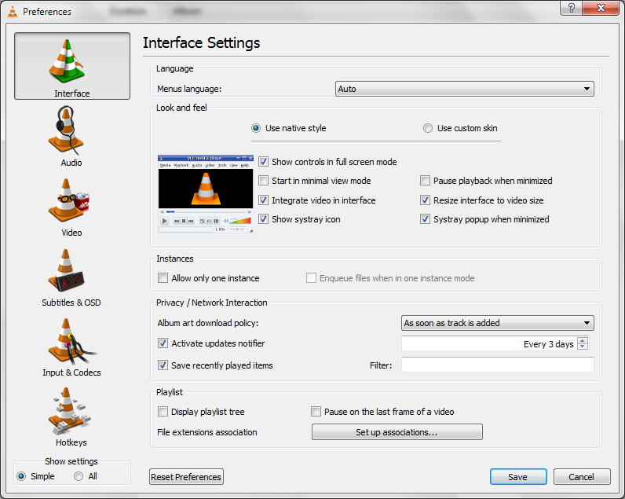
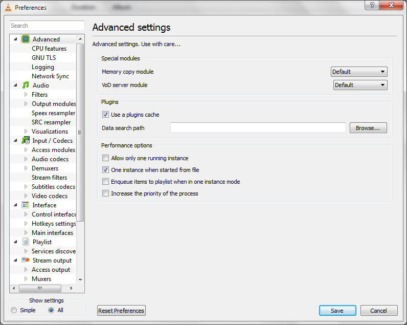
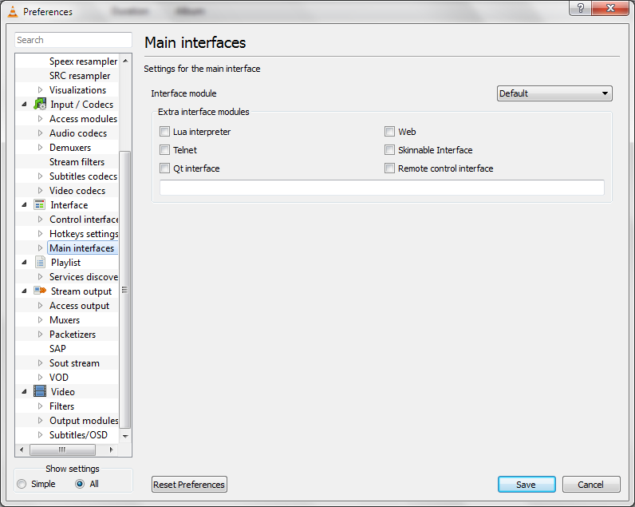
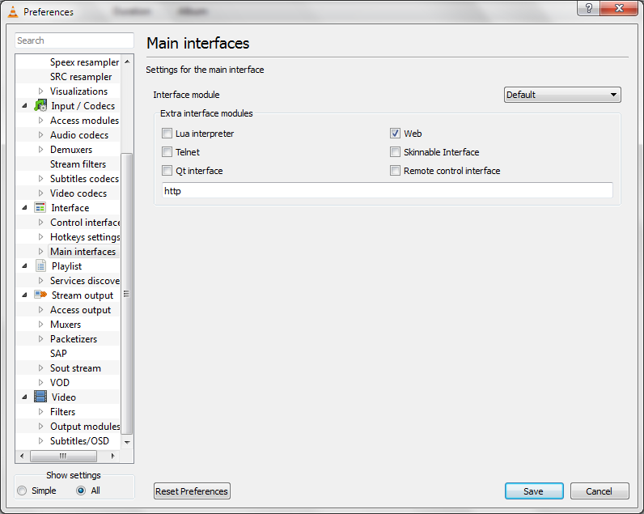
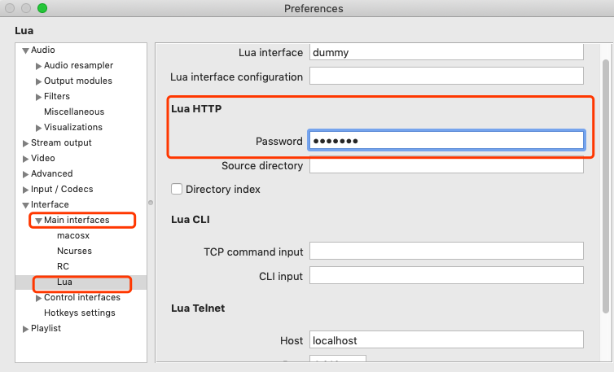

躺在沙发上看电影的正确姿势
解决什么问题
自己平时通过组装的一台 NAS 下载电影，这台 NAS运行着Ubuntu Desktop系统，
电影下载完了以后，通过 Nas 上面的 VLC 打开，然后在电视上播放。问题来了，观看的过程中
如果需要暂停，快进等操作，得从沙发上爬起来跑到电视旁边用鼠标操作，非常反人类。
解决途经
谷歌后发现 VLC 是可以通过 VLC Remote 软件进行远程控制的，这样躺沙发上，可以通过手机上的应用远程控制NAS上面的 VLC，实现进度条拖拉，换片，暂停播放等操作。
需要的软件
被控制端：
VLC 播放应用, 目前看官网，基本全平台支持。
控制端:
- 收费
- IOS: VLC Remote
- Android: VLC Remote
- 免费
IOS: VLC Remote Lite
Android: VLC Remote Free
确保被控制端与控制端处于同一网段
安装设置
被控制端
打开VLC 工具 -> 首选项 -> Interface

默认VLC显示的是简单设置选项。这里我们需要打开高级设置选项，在屏幕底部，单选 All。

点击Main interfaces 菜单

选中 Web

设置 Web 的访问密码，这个密码后续在控制端应用需要输入

保存，并重启 VLC 应用
确保控制端没有防火墙，或者已经针对 VLC 配置了防火墙入站策略
打开手机端 VLC Remote 应用，不出意外，应该会自动发现同一网段内运行 VLC 的机器，点击即可进行控制
躺沙发上，欣赏电影吧^_^